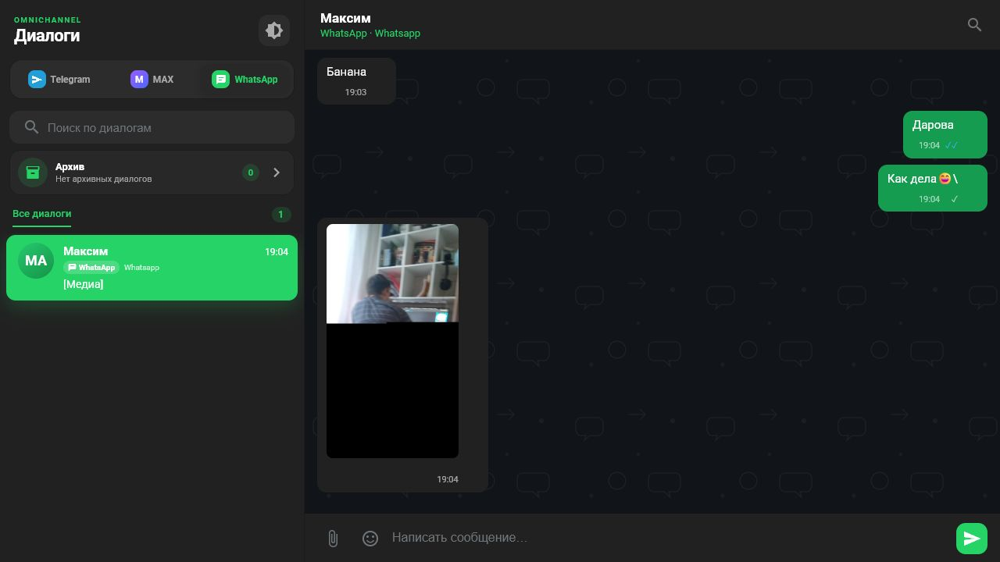
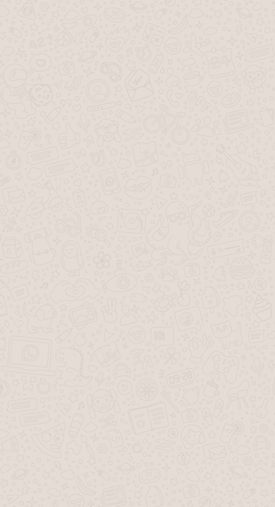
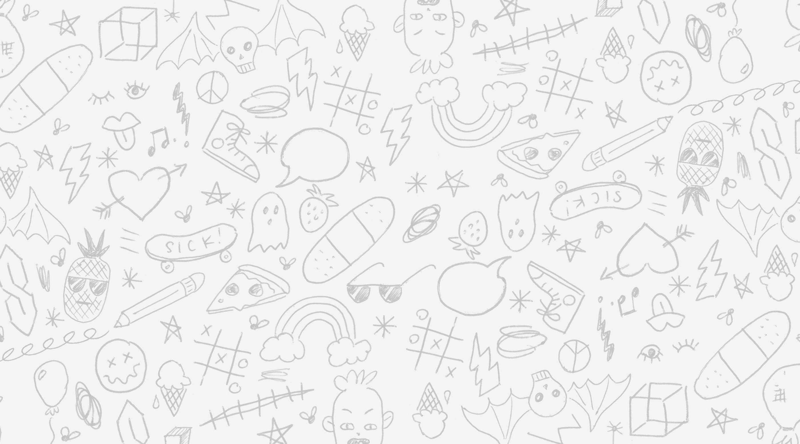

У лучших мессенджерных фонов повторяемый рисунок очень малоконтрастный: он помогает визуально отделить область переписки, но не конкурирует с текстом и цветом пузырей.

Общий паттерн — спокойная серо-бежевая основа, редкие контурные символы, бесшовное повторение и отсутствие крупного смыслового изображения. Для Omnichannel CRM выбран собственный нейтральный SVG с пузырями, стрелкой и точками: он не копирует бренд и одинаково работает с Telegram, MAX и WhatsApp.


Общее: небольшой масштаб элементов, много свободного пространства, низкая контрастность. В продукте снижена визуальная «игривость» и оставлены только универсальные символы общения.
Светлая тема: #eef1f4 и серый контур около 10% opacity. Темная тема: #11151a и белый контур около 5.5% opacity. Цвет не меняется вместе с мессенджером, поэтому переключение канала остается спокойным.
┌──────────────┬───────────────────────────────┐ │ Архив ›│ · [чат] → · │ │ Диалог 1 │ сообщение │ │ Диалог 2 │ ответ ✓✓ │ │ Диалог 3 │ · ○ [чат] │ └──────────────┴───────────────────────────────┘